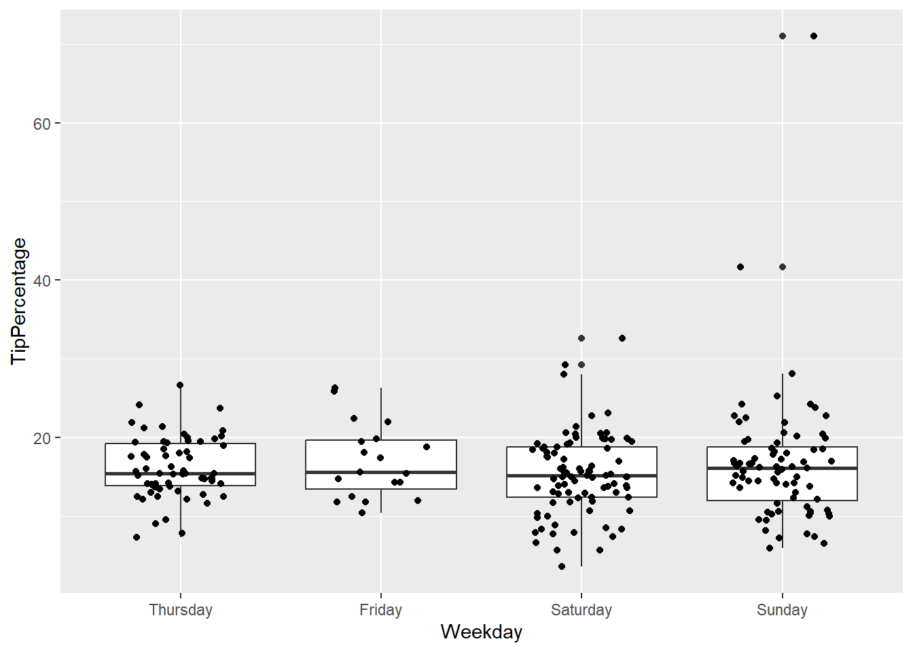
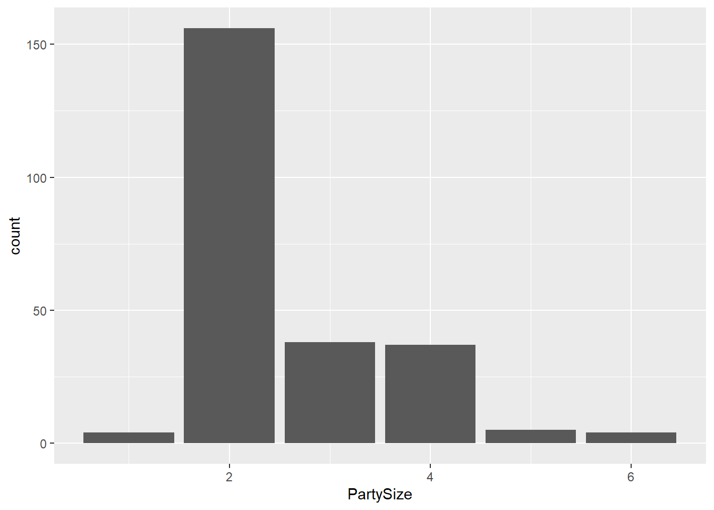
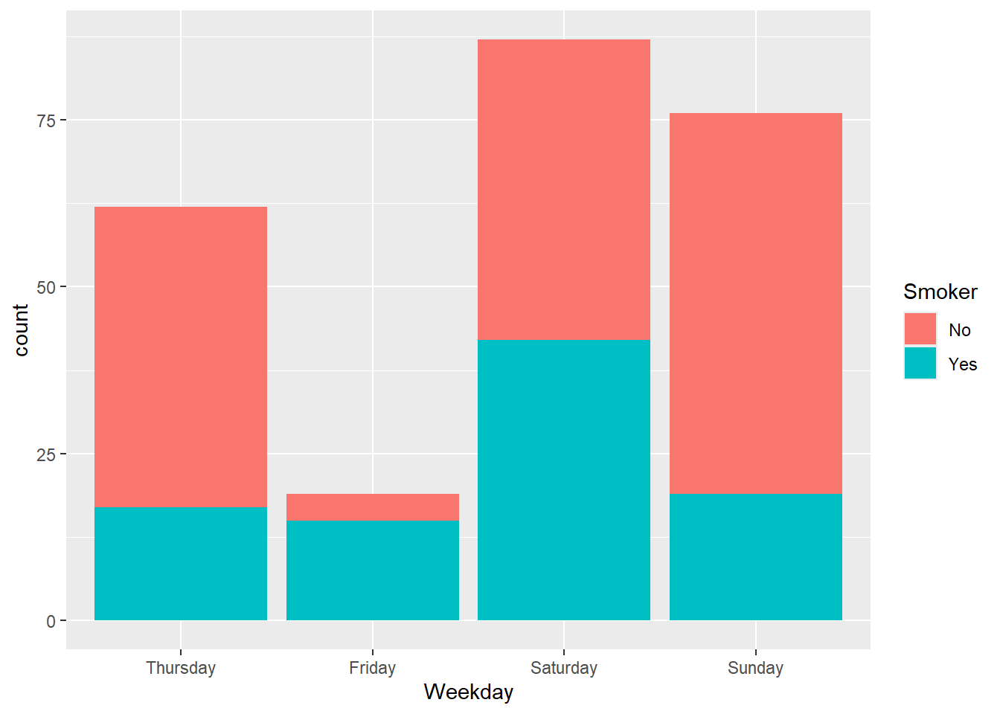
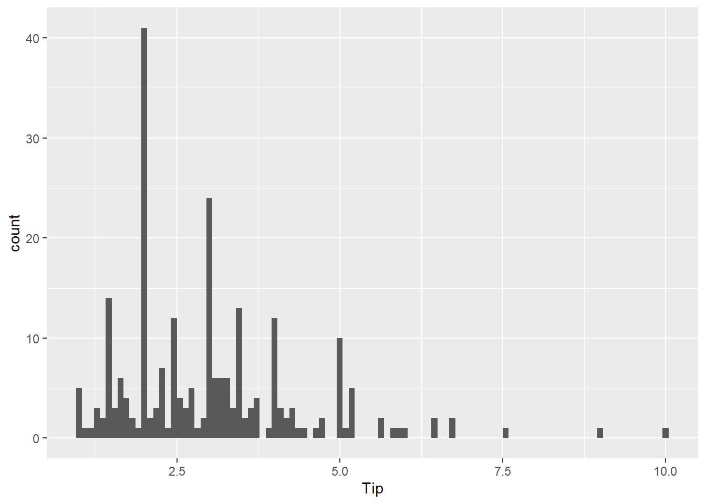
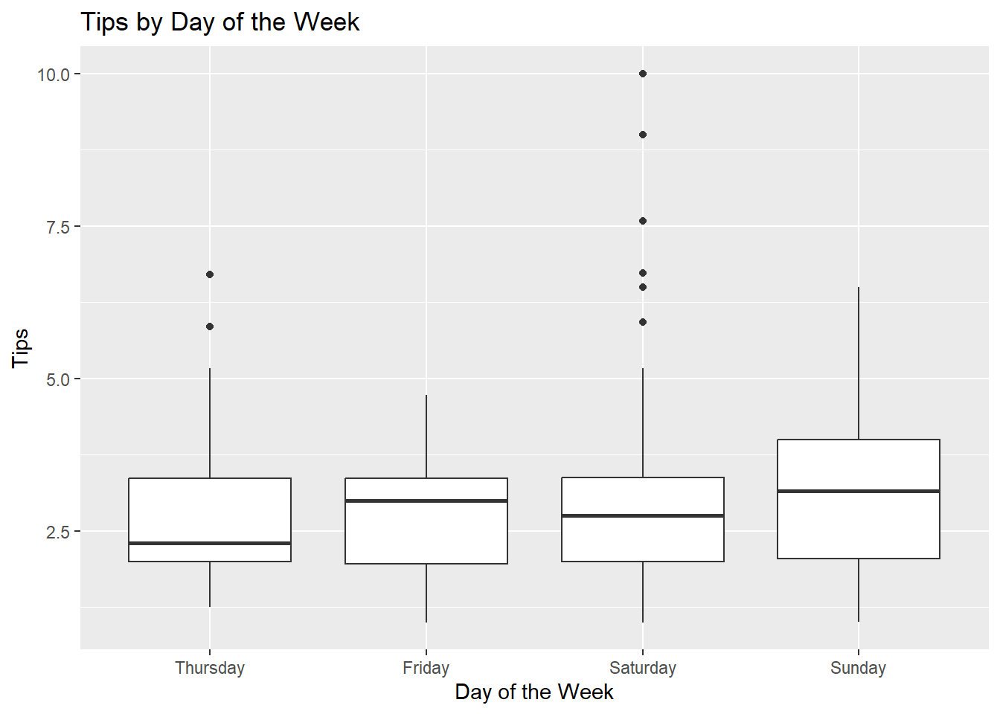
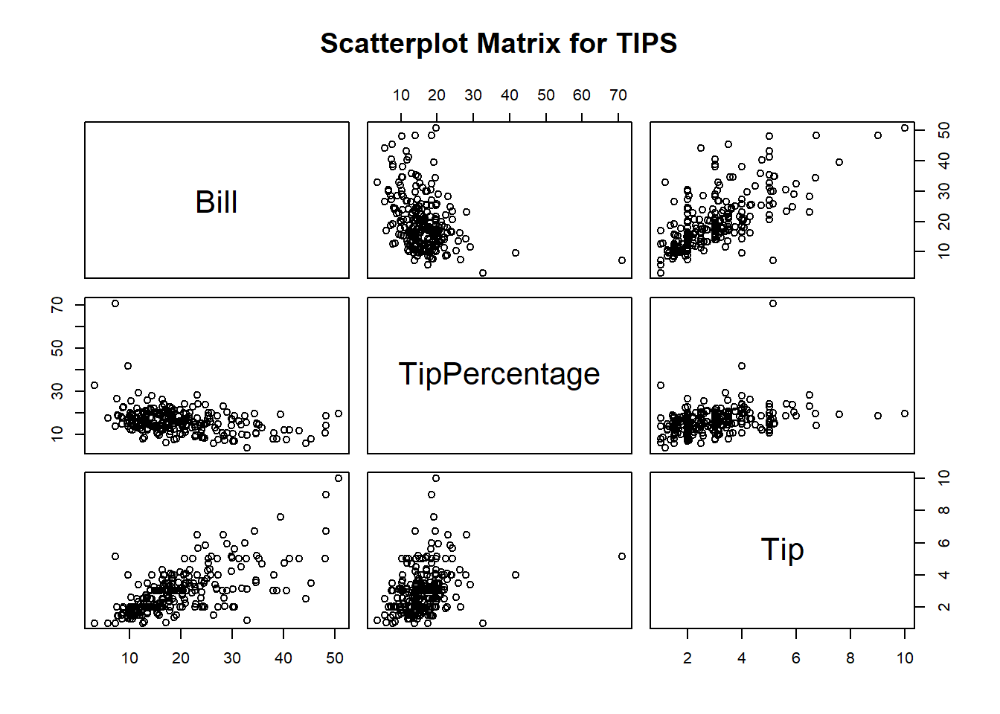
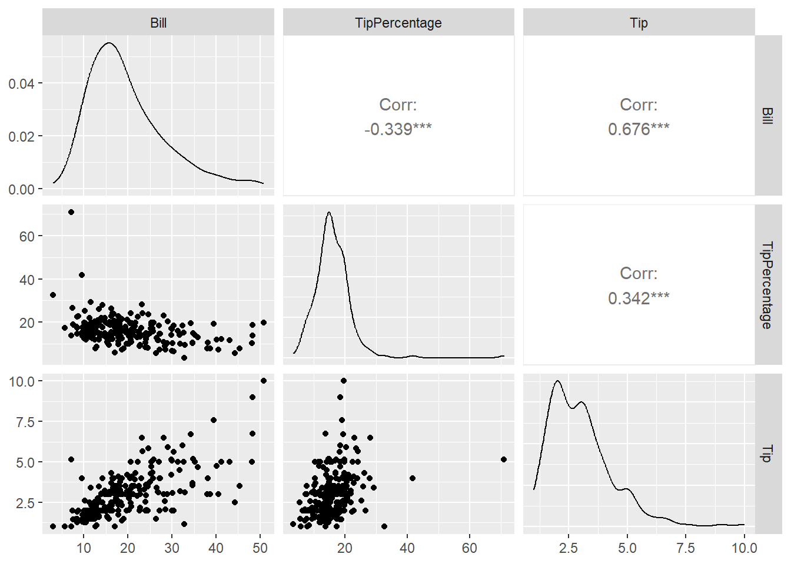

library(regclass)
data("TIPS")Lab 1: Exploratory Data Analysis
MAT 427: Spring ’25
Adapted from “Start teaching with R,” created by R Pruim, N J Horton, and D Kaplan, 2013, “Interactive and Dynamic Graphics for Data Analysis,” by Dianne Cook and Deborah F. Swayne, and Colby Long’s DATA 325 Course at Wooster College.
Prework
- Read Chapters 1 & 2 of ISLR.
Introduction
One of the most important components of data science is exploratory data analysis. I really like the following definition, which comes from this article (though it’s probably not the original source).
“Exploratory Data Analysis refers to the critical process of performing initial investigations on data so as to discover patterns, spot anomalies, to test hypotheses and to check assumptions with the help of summary statistics and graphical representations.”
Before you begin your exploratory analysis, you may already have a particular question in mind. For example, you might work for an online retailer and want to develop a model to predict which purchased items will be returned. Or, you may not have a particular question in mind. Instead, you might just be asked to look at browsing data for several customers and figure out some way to increase purchases. In either case, before you construct a fancy model, you need to explore and understand your data. This is how you gain new insights and determine if an idea is worth pursuing.
Understanding your data
Today we will be working with the TIPS data set which is in the regclass package. The data in the TIPS dataset is information recorded by one waiter about each tip he received over a period of a few months working in a restaurant. We would like to use this data to address the question, ``What factors affect tipping behavior?’’
- Install the
regclasspackage by either typinginstall.packages("regclass")in the console or by clicking “Tools > Install Packages” and selecting the package. Once you have done this, the R chunk below will load the package and data set.
When exploring a new data set, it’s important to first understand the basics. What format is our data in? What types of information are included in the data set? How many observations are there?
- In R, data sets are usually stored in a 2-dimensional structure called a data frame. The
tidyverseprovides a lot of useful functions for a variety of applications including data exploration. After loading thetidyverselibrary, you can get an idea of the structure of a data set using the syntaxstr(dataset)orglimpse(data), and you can peak at the first few rows and columns withhead(dataset). Use these functions (and others) in the R chunk below to better understand the data. How many tips are recorded in this data set? How many variables does this data set have? What are \(n\) and \(p\)? Which days of the week did the waiter work? (Don’t forget to load the tidyverse package.)
library(tidyverse)
glimpse(TIPS)Rows: 244
Columns: 8
$ TipPercentage <dbl> 5.94, 16.10, 16.70, 14.00, 14.70, 18.60, 22.80, 11.60, 1…
$ Bill <dbl> 16.99, 10.34, 21.01, 23.68, 24.59, 25.29, 8.77, 26.88, 1…
$ Tip <dbl> 1.01, 1.66, 3.50, 3.31, 3.61, 4.71, 2.00, 3.12, 1.96, 3.…
$ Gender <fct> Female, Male, Male, Male, Female, Male, Male, Male, Male…
$ Smoker <fct> No, No, No, No, No, No, No, No, No, No, No, No, No, No, …
$ Weekday <fct> Sunday, Sunday, Sunday, Sunday, Sunday, Sunday, Sunday, …
$ Time <fct> Night, Night, Night, Night, Night, Night, Night, Night, …
$ PartySize <int> 2, 3, 3, 2, 4, 4, 2, 4, 2, 2, 2, 4, 2, 4, 2, 2, 3, 3, 3,…levels(TIPS$Weekday)[1] "Friday" "Saturday" "Sunday" "Thursday"There are 244 tips and 8 variables recorded in the data set. It looks like the waiter only ever worked on Thursdays, Fridays, Saturdays, and Sundays.
Often, a data set will come with a code book which gives more complete information about the structure of the data, the meaning of variables, and how the data were collected. In this case, most of the column names are pretty self explanatory.
- Fill in the third column in the table below, identifying each variable as quantitative/numerical or qualitative/categorical
| Variable | Description | Quantitative/Cateogrical |
|---|---|---|
TipPercentage |
the gratuity, as a percentage of the bill | |
Bill |
the cost of the meal in US dollars | |
Tip |
the tip in US dollars | |
Gender |
gender of the bill payer | |
Smoker |
whether the party included smokers | |
Weekday |
day of the week | |
Time |
time the bill was paid | |
PartySize |
size of the party |
- Even though the column names are self-explanatory, we might have more questions about the data. For example, we might conjecture that people tip differently for breakfast and lunch, but our data only tells us if the bill was paid at “Day” or “Night.” State another reasonable conjecture about a factor that might affect tipping behavior. What additional information would be helpful to explore that conjecture?
Answers will vary.
Numerical Summaries
Now we’d like to start looking closely at the data set to develop some ideas about what factors might affect tipping. The basic descriptive statistics have obvious names, like mean, median, sd, IQR, quantile, etc. When using the tidyverse you use these in conjuction with the function summarize. Other options for data exploration include the function summary(), which computes several numerical summaries all at once, and the skimr package which includes many useful functions for taking a quick look at your data. We can apply these functions to an entire data frame or a specific column of the data fame.
- Use some of these summaries to answer the following. How many smokers are in the data set? How fancy do you think restaurant is? Assume that the data is recorded in chronological order. Challenging: How many shifts did the waiter work?
library(kableExtra)
TIPS |>
count(Smoker) |>
kable()| Smoker | n |
|---|---|
| No | 151 |
| Yes | 93 |
TIPS |>
summarize(avg_bill = sum(Bill)/sum(PartySize)) |>
kable()| avg_bill |
|---|
| 7.699793 |
There are 93 smokers in the data set and this is probably not a very fancy restaurant, since the average bill per person is less than $8. If we assume the data are recorded in order, and each day is a shift then we can count how many times the day changes in the data set and see there are 17 shifts.
Shifts <- 1
for (i in 2:length(TIPS$Weekday)){
Shifts <- Shifts + (TIPS$Weekday[i] != TIPS$Weekday[i - 1])
}
Shifts[1] 17As we start to explore different questions, we might want to know things about interactions between variables. Like, are tips larger during the day or at night? Or does gender or smoking status matter for how much people spend and how much they tip? You can calculate statistics within groups by including grouping variables and using group_by or aggregate like this:
library(kableExtra) # package for formatting table output
# Tidyverse
TIPS |>
group_by(Time) |>
summarize(median(Tip)) |>
kable() # make table look nice| Time | median(Tip) |
|---|---|
| Day | 2.25 |
| Night | 3.00 |
TIPS |>
group_by(Gender, Smoker) |>
summarize(avg_bill = mean(Bill), avg_TipPerc = mean(TipPercentage)) |>
kable()| Gender | Smoker | avg_bill | avg_TipPerc |
|---|---|---|---|
| Female | No | 18.10519 | 15.69296 |
| Female | Yes | 17.97788 | 18.21606 |
| Male | No | 19.79124 | 16.06701 |
| Male | Yes | 22.28450 | 15.27967 |
# Using aggregate
aggregate(Tip ~ Time, data = TIPS, FUN = median) |> kable()| Time | Tip |
|---|---|
| Day | 2.25 |
| Night | 3.00 |
aggregate(cbind(Bill, TipPercentage) ~ Gender + Smoker, data = TIPS, FUN = mean) |> kable()| Gender | Smoker | Bill | TipPercentage |
|---|---|---|---|
| Female | No | 18.10519 | 15.69296 |
| Male | No | 19.79124 | 16.06701 |
| Female | Yes | 17.97788 | 18.21606 |
| Male | Yes | 22.28450 | 15.27967 |
The ~ (tilde) symbol appears in a lot of functions. In R, a formula is an expression involving ~ that provides slots for laying out how you want to relate variables: y ~ x means “\(y\) versus \(x\)”, “\(y\) depends on \(x\)”, or “break down \(y\) by \(x\)”. In the first case above, you’re saying “break Tip down by Time” or “perform this function on the Tip, conditioned on Time.”
- Calculate the variance of the tip percentage broken down by day of the week. Do you notice anything unusual? Explore the data and determine a possible cause for this.
# Tidyverse
TIPS |>
group_by(Weekday) |>
summarize(var(TipPercentage)) |>
kable()| Weekday | var(TipPercentage) |
|---|---|
| Friday | 22.54667 |
| Saturday | 26.33058 |
| Sunday | 71.82457 |
| Thursday | 14.96456 |
# Aggregate
aggregate(TipPercentage ~ Weekday, data = TIPS, FUN = var) |> kable()| Weekday | TipPercentage |
|---|---|
| Friday | 22.54667 |
| Saturday | 26.33058 |
| Sunday | 71.82457 |
| Thursday | 14.96456 |
The variance on Sundays is very high.
TIPS$Weekday <- factor(TIPS$Weekday, levels = c("Thursday" , "Friday", "Saturday", "Sunday"))
TIPS |>
ggplot(aes(x=Weekday, y=TipPercentage)) +
geom_boxplot() +
geom_jitter(width = 0.25, height = 0) 
There appears to be a few very large tips on Sunday, the largest of which is 71, which are skewing the variance.
For categorical variables, we can create tables as follows:
# Using table
table(TIPS$Smoker, TIPS$Gender) |> kable()| Female | Male | |
|---|---|---|
| No | 54 | 97 |
| Yes | 33 | 60 |
# Using xtabs
xtabs(~ Smoker + Gender, data = TIPS) |> kable()| Female | Male | |
|---|---|---|
| No | 54 | 97 |
| Yes | 33 | 60 |
# Using the janitor package (my favorite)
library("janitor")
TIPS |>
tabyl(Smoker, Gender) |> # creates table
adorn_totals(where = c("row", "col")) |> # add margin totals if you want
kable()| Smoker | Female | Male | Total |
|---|---|---|---|
| No | 54 | 97 | 151 |
| Yes | 33 | 60 | 93 |
| Total | 87 | 157 | 244 |
- Which day of the week has the highest percentage of tables that are smokers? Hint: look at documentation and use google to figure out how to create table proportions.
# Using janitor
TIPS |>
tabyl(Smoker, Weekday) |>
adorn_percentages("col") |>
kable()| Smoker | Thursday | Friday | Saturday | Sunday |
|---|---|---|---|---|
| No | 0.7258065 | 0.2105263 | 0.5172414 | 0.75 |
| Yes | 0.2741935 | 0.7894737 | 0.4827586 | 0.25 |
# Using xtabs
X <- xtabs(~ Smoker + Weekday, data = TIPS)
X Weekday
Smoker Thursday Friday Saturday Sunday
No 45 4 45 57
Yes 17 15 42 19X[2, ]/(X[1, ] + X[2, ]) Thursday Friday Saturday Sunday
0.2741935 0.7894737 0.4827586 0.2500000 # Using tidyverse
TIPS |>
count(Smoker, Weekday) |>
group_by(Weekday) |>
mutate(percentages = n/sum(n)*100) |>
pivot_wider(id_cols = c(Smoker), names_from = Weekday,
values_from = percentages) |>
kable()| Smoker | Thursday | Friday | Saturday | Sunday |
|---|---|---|---|---|
| No | 72.58065 | 21.05263 | 51.72414 | 75 |
| Yes | 27.41935 | 78.94737 | 48.27586 | 25 |
Friday has by far the highest percentage of tables that are smokers, at 78.9 percent.
Graphical Summaries
Graphical summaries are a key tool in exploratory data analysis to to help you understand your data. They also help you communicate insights about your data to others. For example, we might want to display relationships about some of our categorical variables. So we could start by graphing different party sizes in our data set.
TIPS |>
ggplot(aes(x = PartySize)) +
geom_bar()
Or we could explore the question about the percentage of tables that are smokers on different days of the week visually.
TIPS |>
ggplot(aes(x = Weekday, fill = Smoker)) +
geom_bar()
We might summarize a numerical variable with a histogram. For example, here is a histogram of all of the tips in the data set.
TIPS |>
ggplot(aes(x = Tip)) +
geom_histogram(bins = 100)
- Notice that there are a few “spikes” in the histogram above. What do you think is causing this?
The spikes occur at dollar and half dollar increments because people tend to round their tip.
We can also summarize this numerical data broken down by one of the categorical variables using boxplots.
TIPS |>
ggplot(aes(x=Weekday, y=Tip)) +
geom_boxplot() +
labs(title = "Tips by Day of the Week",
x = "Day of the Week",
y = "Tips")
Or we can visualize the relationship between a lot of our numerical variables at once.
# Using pairs
pairs(~ Bill + TipPercentage + Tip
, data = TIPS
, main="Scatterplot Matrix for TIPS")
# Using ggpairs from GGally package (preferable even though more syntax)
library(GGally)
TIPS |>
select(Bill, TipPercentage, Tip) |>
ggpairs()
- Are there any clear linear relationships in the scatterplots above? What do you think is the explanation for these relationships?
There is a very clearly linear relationship between the bill and the tip because most people tip as a percentage of the bill.
There are lots of other interesting graphical summaries available for interpreting and displaying data. In addition, there are lots of R packages that allow you to draw these graphics and to further customize some of the ones we discussed here. You are welcome to use any of these that you think are appropriate.
- Identify one regression problem, one classification problem, and one unsupervised learning problem that can be identified using this data set.
Answers will vary.
- Choose one of the problems you outlined in the previous question. Give at least one numerical and one graphical summary to explore this conjecture. Is there any evidence to support your conjecture?
Answers will vary.